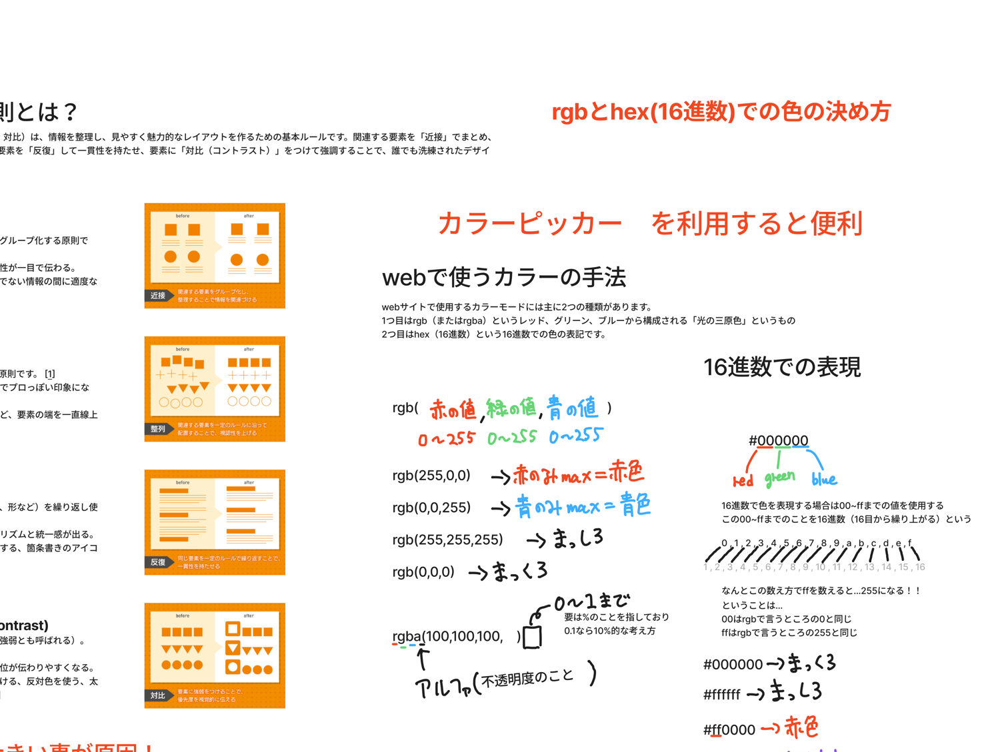

訓練校｜全6時間の集中授業
テーマは 「ブロック要素とインライン要素」「色の指定3種類」「デベロッパーツール」。
かんたんに言うと 「タグには『塊タイプ（ブロック）』と『文中タイプ（インライン）』の2種類がある」「色は #ff0000 か rgb() か rgba() で指定する」「F12を押すとブラウザに開発者ツールが出て、その場でCSSを試せる」という話です。
行をクリックでその説明へジャンプ。★が多いほど大事。
| 時刻 | 内容 | 大事さ |
|---|---|---|
| 00:01 | ブロック要素・インライン要素 | ★★★ |
| 00:15 | デベロッパーツール起動（F12） | ★★★ |
| 01:00 | CSS実験・優先度の確認・日本語化 | ★★★ |
| 01:38 | お昼休憩 | — |
| 02:28 | ウェブページの構造（教科書14-15p） | ★★★ |
| 02:31 | デザインの4大原則 | ★★★ |
| 02:44 | Z型・F型視線 | ★★ |
| 02:57 | カラム数（1/2/3カラム） | ★★★ |
| 03:24 | 画像の種類（ビットマップ vs ベクター） | ★★★ |
| 03:32 | モニターと画像サイズ（重い原因No.1） | ★★★ |
| 03:43 | RGBの書き方 | ★★★ |
| 04:00 | 休憩 | — |
| 04:18 | RGBA（透明度）・16進数 | ★★★ |
| 04:31 | 略記（#f00）・16進数では透明度不可 | ★★ |
| 04:39 | 授業終了 | — |
タグには2つのタイプがあります。
ブロック要素＝「四角い塊」（段ボール箱のイメージ）。インライン要素＝「文の中の一部分」（マーカーで引く感じ）。
div p header main nav footer h1〜h6span strong smallimg＝インラインなのに幅高さ指定OK。a＝親のタイプを引き継ぐ。この2つだけ特別、と覚える。
ブラウザに最初から付いている「中身を調べる・その場で試す」道具。
F12 か 右クリック→検証で出ます。コーディング力はこれの使いこなしで決まります。
DevToolsで色・余白をリアルタイム調整 → 「これだ」と決まったらVSCodeにコピペ。試行錯誤の時間が激減します。
1列。スマホ対応が楽。初心者推奨。
メイン＋サイド。コーポレートサイト。
情報量多いサイト。スマホ対応大変。
デザインの土台中の土台。これを意識するだけで読みやすさが激変します。
関係ある要素は近づける、関係ないものは離す。
端や中心をそろえる。バラバラはNG。
同じパターンをくり返す。一貫性で信頼感。
差をつけて強弱。見出しは大きく太く。
これはウェブに限らず部屋の整理整頓にも使えるレベル。引き出しのフォークとスプーンと箸が整理されてますか？それと同じ話。— A先生
人の目は Z や F の形に動きます（5/11で詳しくやった内容の復習）。
大事な情報は左上〜左寄りに。コンビニの陳列と同じ原則。
Web用は解像度72dpi・RGB。CMYKは印刷用なので無視でOK。
画像のサイズ調整をしていないこと。
1500pxの画像をCSSで300pxに縮小して使うと、フォルダが膨らんで読み込みが遅くなる。「使うサイズに事前リサイズ」が鉄則。
CSSで色を指定する方法は3つ。① 16進数 #ff0000 ② RGB rgb(255,0,0) ③ RGBA rgba(255,0,0,0.5)（透明度つき）。
下が先生の手書き板書です。rgb(赤の値, 緑の値, 青の値) で各0〜255。rgb(255,0,0)=赤、rgb(255,255,255)=白、rgb(0,0,0)=黒。RGBAの4つ目「アルファ」＝不透明度。16進数は #000000=黒 / #ffffff=白 / #ff0000=赤。

p { color: #ff0000; } /* 赤 */
# の後 2桁ずつが R・G・B。各 00〜FF（＝0〜255）。略記もOK：#ff0000 → #f00。
.t { color: rgb(255, 0, 0); }
RGBは混ぜると白くなる（光の三原色）。絵の具（CMYK）は混ぜると黒。逆です。
.overlay { background: rgba(0, 0, 0, 0.5); }
アルファ値：0＝透明、0.5＝半透明、1＝不透明。16進数では透明度を指定できないので、透明にしたい時は rgba() を使う。
色決めは Google「カラーピッカー」や Coolors が便利。モニターによって色は微妙に違って見えるので注意。
| 用語 | 意味 |
|---|---|
| ブロック要素 | 四角い塊。幅高さ指定可、後ろで改行 |
| インライン要素 | 文中の一部。改行しない |
| デベロッパーツール | ブラウザの調査・実験ツール（F12） |
| カラム | 列。1/2/3カラム |
| 近接・整列・反復・対比 | デザイン4大原則 |
| ビットマップ | JPEG/PNG等。点の集まり |
| ベクター | SVG。数式で描く、荒れない |
| 16進数 | #ff0000 の色表記 |
| RGB | rgb(255,0,0)。混ぜると白 |
| RGBA | RGB＋透明度。rgba(0,0,0,0.5) |
| アルファ | 不透明度（0=透明〜1=不透明） |
img と a の例外を覚えるRGBは混ぜれば混ぜるほど白くなる。絵の具とは逆。デジタルの色は光の足し算。
サイトが重たくなる理由の初心者第1位は、画像のサイズ調整をしてないこと。メモっといてください。
デザインの4大原則は部屋の整理整頓にも使えるレベル。日常からアンテナを張って。
最新技術が正しいかというとそうでもない。ブラウザのバージョン違いで崩れることがある。一生付き合う話。